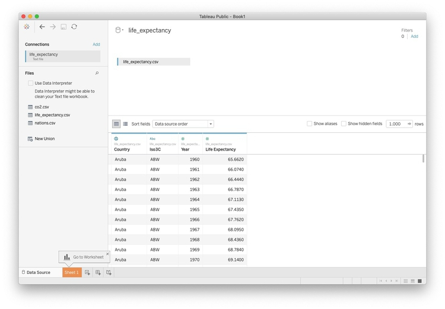
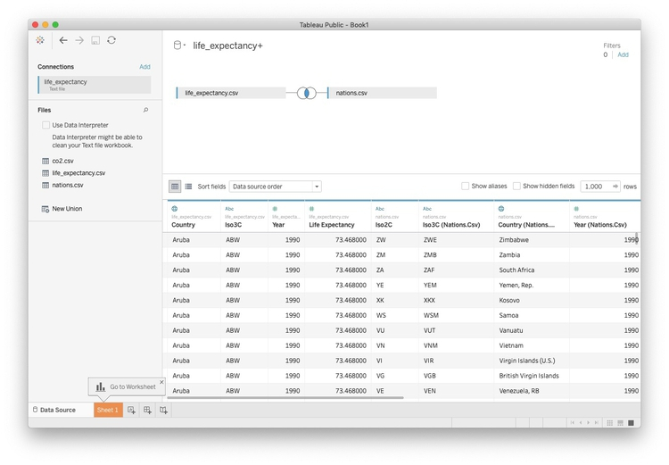
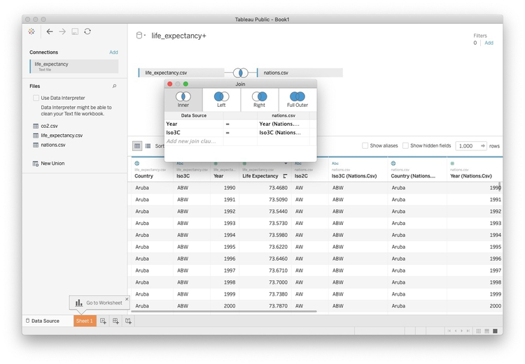
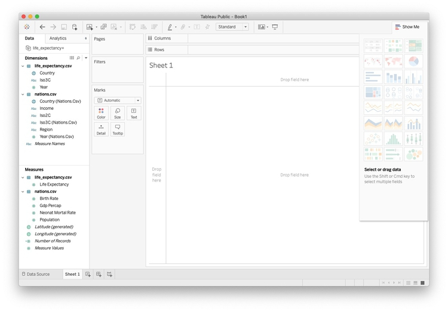
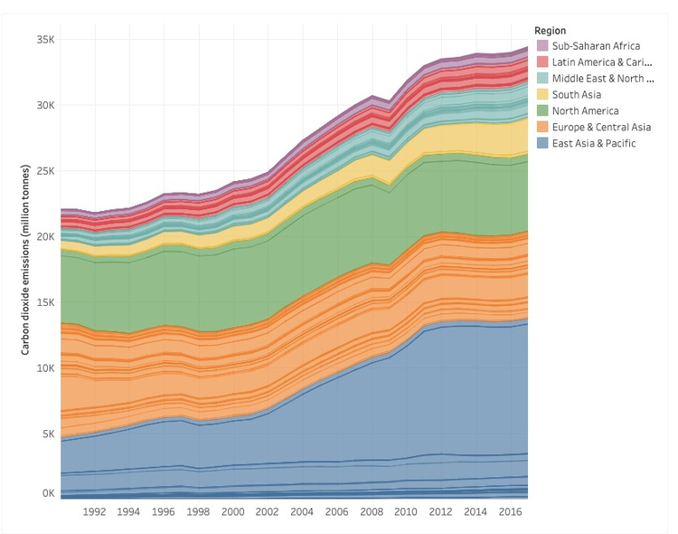

Your task for this week’s class is to create a Tableau version of the visualization in this Gapminder video, using data from the World Bank’s World Development Indicators (WDI):
(Source: BBC/Gapminder)
Download the data for this session from here, unzip the folder and place it on your desktop. It contains the following files:
nations.csv As used in week 3, but lacking the variable for life expectancy at birth.
co2.csv From the Global Carbon Atlas. Contains the following fields:
iso3c Three-letter code for each country.country Country name.yearemissions Carbon dioxide emissions, in millions of tonnes.Download data in Excel format for life expectancy at birth by nation over time from here.
Process this data using Open Refine to remove the rows above the header row, and remove columns to leave just the country names, country codes, and data from 1960 onwards. Then convert from wide to long format. When doing this, I would call the new column with life expectancy data life_expectancy. I would also rename Country Code to iso3c and rename Country Name to country. Then the variable names will match those in nations.csv. Place this file in the week6 folder.
Export the data in CSV format with the filename life_expectancy.csv and place this file in the week6 folder.
Launch Tableau, and connect to the life_expectancy.csv file in the week6 folder.

Now double-click on the file nations.csv. Tableau will now attempt to join the data based on common fields:

To control how the join is performed, click on the circles with the blue area of overlap. Remember that there is one row in this data for each country in each year. So to join the data appropriately, we need to join by year and the iso3c country code (joining by unambiguous codes is generally a better idea than joining by names).
There are four types of join in Tableau:
Inner Join: Returns values from both tables that match on the selected variables. The rest of the data is discarded.
Left Join: Returns all the values from the left-hand table, plus those from the from the right-hand table that match on the selected variables. Where there is no match, values will be null.
Right Join: Returns all the values from the right-hand table, plus those from the from the left-hand table that match on the selected variables. Where there is no match, values will be null.
Full Outer Join: Returns all the values from the both tables, matching them on the selected variables where possible. Where there is no match, values will be null.
For this exercise, choose an inner join.

The joined data should look like this in a Tableau worksheet. You can see which variables came from which file:

Join the file co2.csv to the file nations.csv in Tableau as above, then create this simple dashboard shown below, recording total carbon dioxide emissions by region and nation, from 1990 to 2017.
